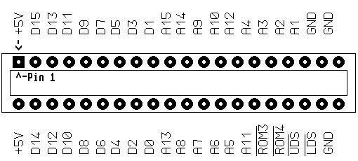

Previous
Next
TOC
Der ROMport funktioniert beim Falcon030 nicht?
Den Falcon030 aufschrauben und die
Sicherung F2 (0.5A) überprüfen
Die Sicherung sitzt seitlich links unterhalb des Netzteils.
(Pin 1+2 sind +5Volt und die Pin's 38-40 sind Masse am Romport!)
Es kann natürlich auch sein, das daß Modul selber defekt ist, die
Kontakte verdreckt sind (saubermachen mittels einem Glashaarpinsels!)
oder im schlimmsten Falle ist eine der Steuerleitungen UDS, LDS,
ROM3 + ROM4 Select defekt bzw. der COMBEL Chip Schaden genommen
hat.
Der Expansionport funktioniert am STBook nicht?
Tja, das Problem hier ist, es gibt keine Sicherung für die +5 Volt
Versorgungsspannung. Es kann natürlich auch sein, das daß Modul
selber defekt ist, die Kontakte verdreckt sind (saubermachen mit-
tels einem Glashaarpinsels!) oder im schlimmsten Falle ist eine
der Steuerleitungen UDS, LDS, ROM3 + ROM4 Select defekt bzw. der
COMBO Chip hat Schaden genommen.
Hinweis:
Alternativ kann auch eine PolySwitch Sicherung (ca 3.- DM) oder ein
Überstromschutzschalter (ca 13.- DM) eingesetzt werden. Diese haben
den Vorteil das sie sich automatisch beziehungsweise per Tastknopf
zurücksetzen sowie der Computer kurzzeitig ausgeschaltet wird oder
der Knopf betätigt wird.
Was ist denn überhaupt eine Polyswitch Sicherung?
Die Bezeichnung 'Switch' ist nicht korrekt, da es sich um einen stark
nichtlinearen temperaturabhängigen Widerstand handelt, die Nichtli-
nearität besteht darin, dass ab einer bestimmten Temperaturschwelle
welche bei Überströmen oder Kurzschlüssen auftritt (je nach Typ zwi-
schen -40 - +85 Grad Celsius) der Widerstand stark ansteigt und bis
auf einen geringen Restrom nichts mehr fließt. Nach dem abschalten
der Betriebsspannung stellt sich das Bauteil von selbst schnell um
(innerhalb von 20 Sekunden )und kehrt in den niederohmigen Zustand
zurück.
PolySwitch ist ein eingetragenes Warenzeichen der Raychem Corp.
Und für die Bastler noch die Pinbelegung des ROMports:

Kapitel Die Probleme mit dem ROMport, Seite 1